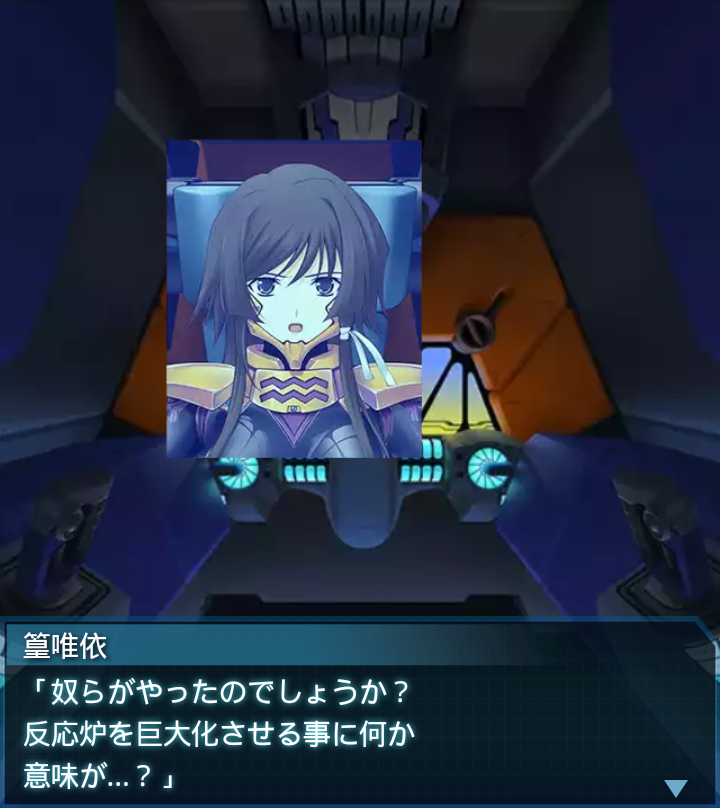
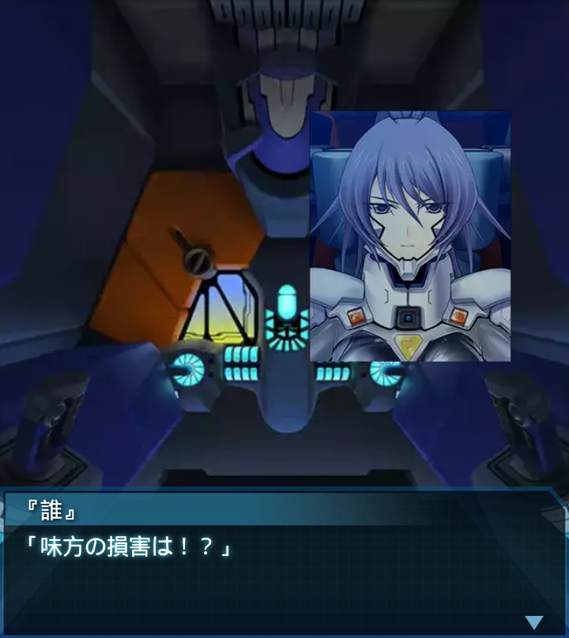

コンゴ・コンゴハイヴ4
篁唯依
「大広間への侵入成功！
反応炉を確認！
――あれは！？」
篁唯依
「人工反応炉と思しき物体が、
反応炉に取り込まれています！」

『誰』
「でかいな…。あの研究施設の全容
はブーベ島と同レベルの大きさが
あったってことか…」

篁唯依
「奴らがやったのでしょうか？
反応炉を巨大化させる事に何か
意味が…？」
『誰』
「短期間に多くのＢＥＴＡを
生み出す為に必要だったのかも
しれないな」
篁唯依
「ＢＥＴＡ共の群がり具合を見れば
納得もいきますね…。
尋常な数じゃない」
『誰』
「あいつ等を倒せば反応炉への
道が開ける。全機、ありったけの
弾を食わせてやれっ！」
篁唯依
「「「了解ッッ！！」」」
ヘルガローゼ
「反応炉の破壊を確認！
作戦は成功です！」

『誰』
「味方の損害は！？」
ヘルガローゼ
「ローテ中隊、全機健在です！
しかし、ファング中隊が…！
多数のＢＥＴＡに囲まれ劣勢！」
ヘルガローゼ
「Ｓ－１１設置の為に深くまで突入
していたんです。その為に脱出も
遅れ――」
ヘルガローゼ
「…ファング１、中破！まずい、
要撃級が篁機に接近…！」
『誰』
「もう弾薬が、クソッ！！！
死なせるかぁぁぁ！！！」
ヘルガローゼ
「ちょ、長刀を投げただと…！？
要撃級、沈黙！各機、大尉を
援護しろ！」
『誰』
「大丈夫か、篁中尉！！」
篁唯依
「Ｓ－１１は全弾起爆しました。
反応炉は…？」
『誰』
「安心しろ、完全に破壊した。
機体は動くか？…ん？バイタルに
異常が…。怪我しているのか？」
篁唯依
「だ、大丈夫…です。しかし、
ファルケンマイヤー少尉には
申し訳無い事を…」
篁唯依
「武御雷を見せてやると言った
のに、この有様…。
斯衛軍人として――」
『誰』
「わかった喋るな。篁中尉が負傷、
機体は抱えて運ぶ。全機撤退
するぞ！」